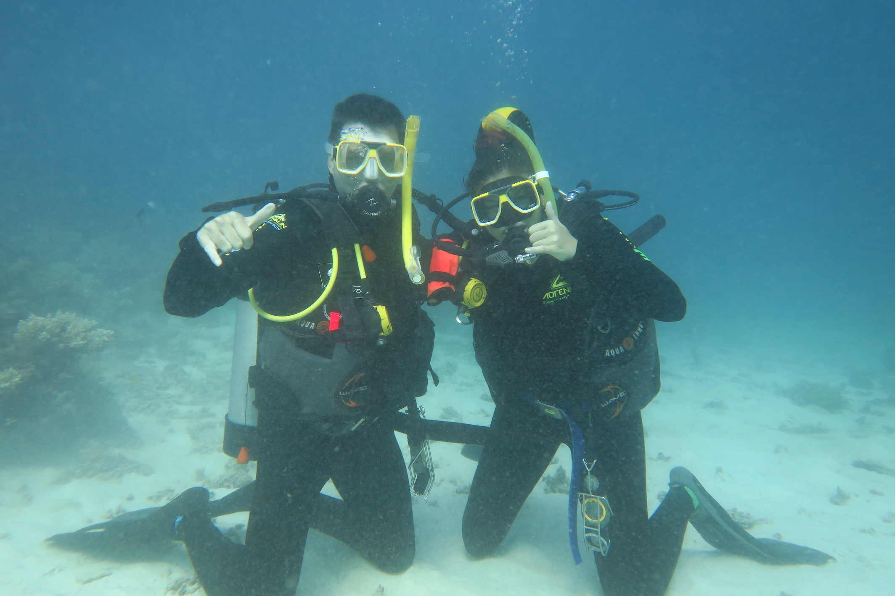
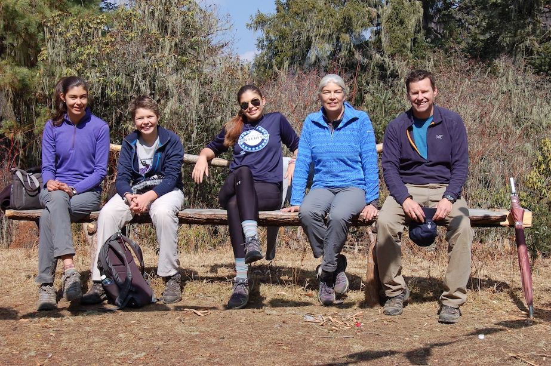
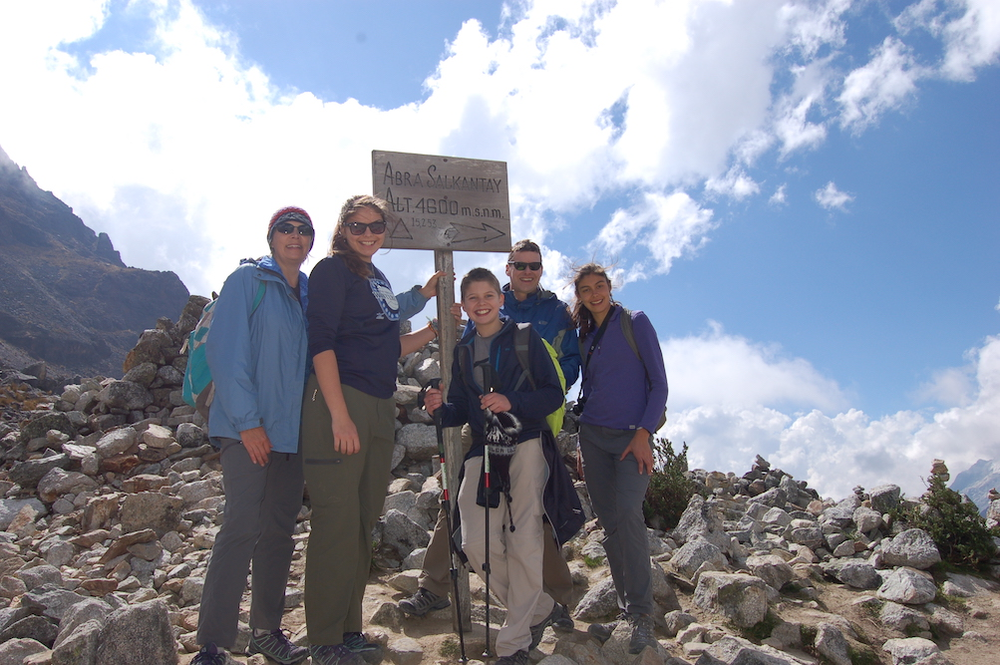
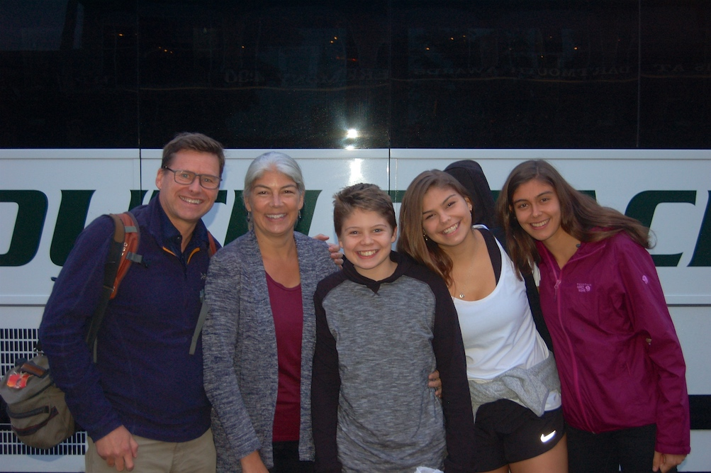
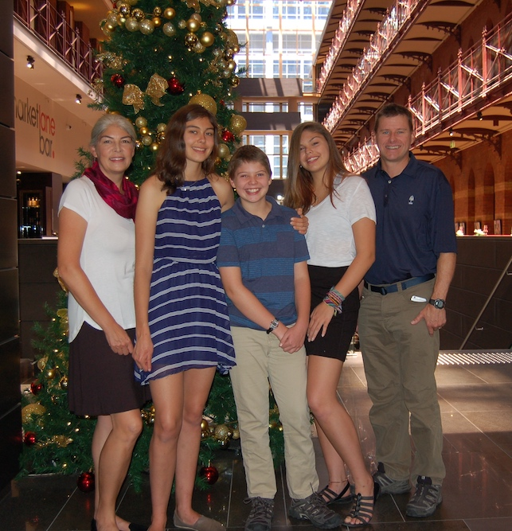
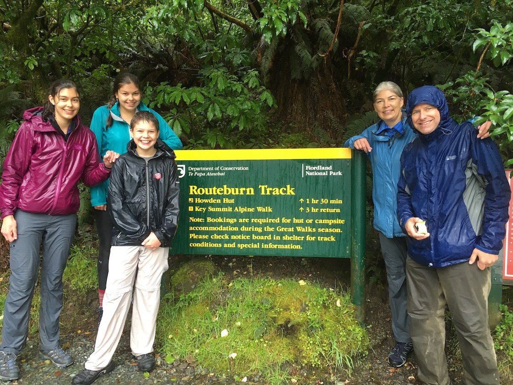

The Guy Next Door
I teach at Dartmouth College and live in Hanover, NH. My wife Leah is principal of the Canaan Elementary School. She was a high school math teacher before that; and a tech entrepreneur before becoming a teacher.
We lived in Chicago for nearly 20 years and absolutely loved the city, but we also love the outdoors. Moving to Hanover enabled us to return to our alma mater and live in an idyllic part of the country.
The whole family shares a love (bordering on obsession) with international travel. My wife Leah and I traveled around the world together after graduating from Dartmouth in 1988. Many years later, I took my two daughters around the world via the Trans-Mongolian Railroad.
In 2016-17, our family took a “family gap year”: nine months, six continents, three teenagers! At the time, Katrina was 18, Sophie was 16, and CJ was 13. The trip provided fodder from my most recent book, We Came, We Saw, We Left: A Family Gap Year. Katrina is now a student at Williams College in Williamstown, Massachusetts. Sophie is in school at John Jay College of Criminal Justice in NYC. CJ is finishing high school in Hanover.
I live in Hanover, New Hampshire, with my wife and three children.






A Day in the Life
We live in New Hampshire, and if you live in New Hampshire, you
had better like the outdoors. Just yesterday, our black Labrador
retriever Lily ended up with a porcupine quill hanging off her
nose after an afternoon of cross-country skiing. (My wife and
daughter were cross-country skiing, not the dog.)
Our house abuts the Appalachian Trail, so it’s easy to get off
into the woods at just about any time of year (though snow shoes
are recommended in the winter). I’m an avid golfer in the summer.
Come winter, I try to play hockey without injuring myself. There
is nothing more exhilarating than playing pond hockey
(outdoors on a pond) on a brisk winter day.
When I’m not doing that kind of stuff, I try to write books
and grade my students’ papers!